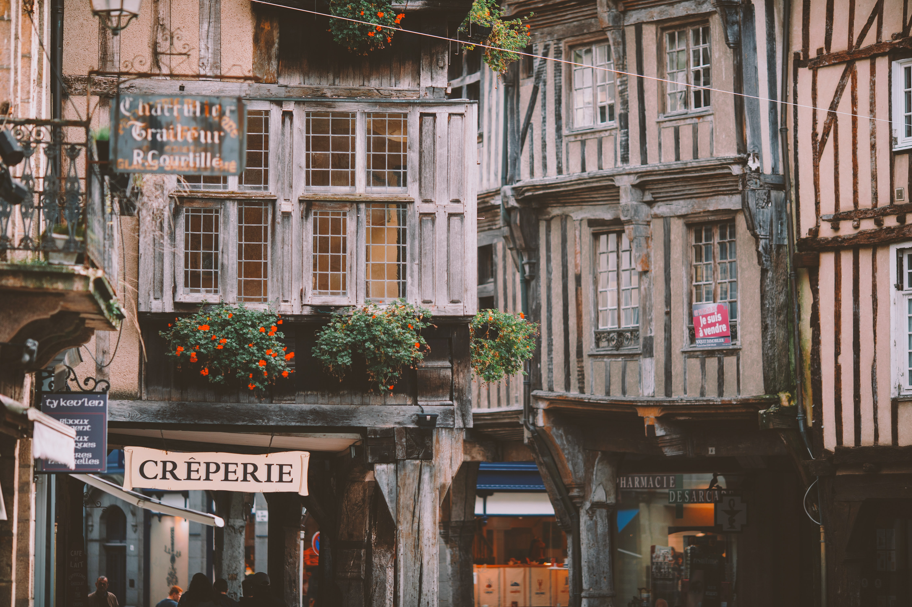

À Propos de notre restaurant
Situé à cinq minutes de la Porte de Versailles, caché au milieu des vignes, Crêpes Emporium vous reçoit dans une ancienne maison d’ouvriers chargée d’histoire familiale.
Le restaurant propose plusieurs ambiances : en terrasse sous les arbres fruitiers l'été, au coin du poêle à bois l'hiver ou encore dans le chalet des vignes à la mi-saison.
La courte carte change au fil des saisons et des envies du chef Cédric Cincinnatus qui vous propose une cuisine française traditionnelle et artisanale. Les produits sont tous frais et pour certains issus du potager familial en permaculture.
Spécialistes depuis quatre générations, Aude Legrand, la sœur de Mathieu, assure la sélection des des meilleurs pâtes pour le restaurant.
Clément Dumet et son équipe de salle piochent dans cette sélection pour vous proposer une carte des vins riche et variée permettant des accords mets et vins personnalisés.
Tous ces vins sont à retrouver dans nos boutiques, dont l'une d'elles est au pied du restaurant.
Ouverture du restaurant toute l'année du lundi au vendredi : déjeuner et dîner.
Fermeture samedi, dimanche et jours fériés : privatisation sur demande.
Entre amis ou pour des repas d’affaire, réservez le salon des Grands Crus (jusqu’à 10 personnes), sans supplément, sous réserve de confirmation de notre part.
© Crêpes Emporium | Issy-les-Moulineaux
